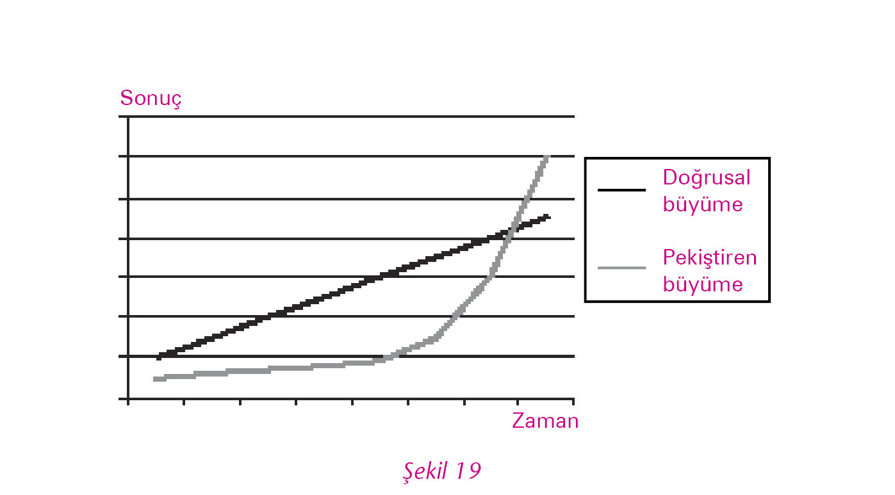
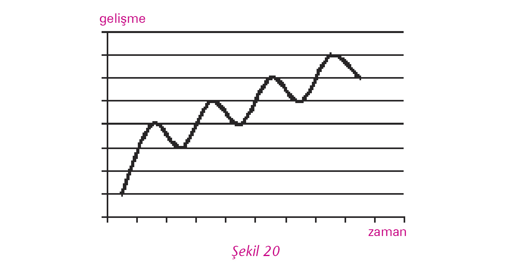

Öner içeri girdiğinde diğer toplantıların aksine yüzler asıktı. Eski toplantıları hatırladı Öner ve ürperdi. Yine mi geçmişe dönüyoruz, her şey yeniden mi başlayacak diye düşündü. “Lütfen devam edin, ben dinliyorum,” diyerek boş bir sandalyeye oturdu.
Mehmet, Öner’in girmesi üzerine kestiği konuşmasına devam etti: “Geçen hafta iki müşterimizden daha şikâyet geldi. İstedikleri kaliteyi tutturamamışız. Satışlarımız ise artmak yerine düşüyor.”
Abdullah, “Küçük ve özel siparişler gelmeye devam ediyor,” dedi üzgün bir şekilde. “Bu durumda yapabileceğimiz fazla bir şey yok. Gerçi üretimdeki arkadaşlar ellerinden gelen her şeyi yapıyorlar ama mucize yaratamazlar.”
Güler, “Yani siz sonuç alamadığımızı, bütün uğraşılarımızın boşa olduğunu mu söylüyorsunuz?” derken, o da sinirliydi.
Rıza, müdahale etti. “Arkadaşlar, sakin olalım. Her şeyin bir anda düzeleceğini beklemek doğru olmaz.”
Billur, “Lütfen,” dedi, “eski toplantılardan birindeymişiz gibi hissettim. Tek Yumruk Takımı’na, kararlarımıza ne oldu?”
Zeki, araya girdi. “Billur haklı. İlk zorlukta pes edip geçmişe dönecek değiliz.”

Toplantıyı sessizce izlemekte olan Emin tahtanın başına geçip şekil 19’u çizerek konuşmaya başladı: “Hissettikleriniz çok doğal. Bu çalışmalarda elde edilen sonuçlar doğrusal değil, pekiştiren bir özellik gösterir. Yani alınan sonuçlar, sağlanan gelişme, başlangıçtan itibaren zamana bağlı olarak eşit bir artış eğilimi göstermez.
“Pekiştiren süreç içindeyken başlangıçta hiç sonuç alamıyor, gelişmeler çok yavaş oluyor ve ortaya başarılı olunamıyor gibi bir tablo çıkıyor. Aslında başlangıçtaki bu yavaş büyümenin nedeni öğrenmedir. Henüz sonuç alamıyorsunuz diye, endişelenmeyin. Bunun için henüz erken. Sosyal ilişki ağınızı hızla genişletmek, bazı sonuçları daha çabuk görmenize yardımcı olacaktır.”
Öner, “Emin Bey’e katılıyorum. Çalışmaya yeni başladık, bunların etkilerini görmek için biraz daha zamana ihtiyacımız var. Moralimizi bozmayalım.”
Bu sefer Akın söze girdi: “Aynen yaşamda olduğu gibi, bu çalışmada da inişlerin ve çıkışların olması son derece doğal. Birlikte çalışmanın verdiği zevk ve başarının verdiği mutluluğun yanında hayal kırıklıkları, engellenmişlik duygusu, ilerleyemediğinizi hissettiğiniz zamanlar olacaktır. Duygusal zekâ konusunu hatırlayın. Başarının altında yatan en önemli etkenlerden biri duygularımızı tanımak, kabul etmek ve olumluya çevirmeyi başarmaktır.
“Öğrenmek için tedirginlik, belirsizlik, umutsuzluk, hayal kırıklığı gibi tüm duygular birer fırsattır. Bu duyguları kabullenip onları pozitife çevirmeyi başarabilir ve bu beceriyi hayatınızın pek çok farklı alanına uygulayabilirsiniz.”

Akın yukarıdaki şekil 20’yi çizerek devam etti: “Büyük olasılıkla şöyle bir süreç izleyeceksiniz. Bu grafikteki inişleri çıkışlara çevirmek için birbirimize yardımcı olabiliriz…”
Toplantının sonunda Tek Yumruk Takımı sosyal ilişki ağlarını hızla genişletmeye ve ilgili herkesi bir an önce işin içine katmaya karar vermişti.
Zeki: “Kendimi dayak yemiş gibi hissediyorum.”
Billur: “Abdullah, olgun ve sakin davrandın, tebrik ederim.”
Abdullah: “Aslında çocuklar da haklı. Satın da satın diye başlarının etini yiyoruz. Ne yapsınlar, fırsatı bulunca içlerini boşalttılar. Ürün kalitesi, teslim gecikmeleri, maliyetle ilgili sorunları bilmiyoruz ya da umursamıyoruz sanıyorlardı. Umarım öyle olmadığını açıklayabilmişizdir.”
Mehmet: “Çok üzgünüm, kendilerini o kadar stres altında hissediyorlar ki, böyle bir ortamda sınırları kolayca aşabiliyorlar.”
Güler: “Siz sonuca bakın. Bölge satış müdürleri, teslim tarihlerini uzatmak, farklı kriterli küçük siparişleri azaltmak için ellerinden geleni yapacaklarını söylediler.”
Rıza: “Toplantının başında ne kadar da savunmadaydılar. Sanki onları suçlamak, düşen satışlar nedeniyle ifadelerini almak için çağırmışız gibi davranıyorlardı. Kötü ve klimasız arabalarla, düşük maaşlar ve imkânlarla, kötü ürünle daha iyisini yapamayacaklarını anlatmaya gelmişlerdi. Billur, koşulların ne kadar kötü olduğunu, ama bunun Firma’da çalışan herkes için aynı olduğunu, içinde bulunduğumuz sıkıntıyı aşamazsak bu koşulları iyileştiremeyeceğimizi çok güzel açıkladın.”
Billur: “Bence kısmen ikna oldular, ama samimiyetimizi görmek isteyeceklerdir. Onlarla ayda bir kez toplanalım ve gelişmeleri paylaşalım. Yıllardır ihmal ettiğimiz ilişkileri tek bir toplantıyla güçlendirmeyi başaramayız.”
Zeki, “Bu toplantıda ‘kiralama’yla ilgili fikrimizi paylaşacak ortam olmadı, önümüzdeki ay bunu da anlatalım ve görüşlerini alalım. Piyasayı, müşteriyi en iyi onlar tanıyor.”
Güler: “Büyük bir kısmı hiç konuşmadı, konuşanlar da eleştirdi. Özel kriterli ve üstelik az sayıdaki ürünleri üretmenin zor ve zaman alıcı olduğunu, üstüne üstlük bir de zaman baskısı altında çalıştıklarını, çalışma koşullarının elverişsiz olduğunu söylediler.”
Abdullah: “Çoğunluğun konuşmaması sizi aldatmasın, bence toplantıdan çıkarlarken rahatlamışlardı ve kendilerini daha iyi hissediyorlardı. Çünkü ustalarımdan biri, bu toplantının eleman çıkaracağımızı açıklamak için yapılacağı söylentilerinin dolaştığını söyledi.”
Billur: “Arkadaşlar, bu krizi aşmak zorundayız, yoksa bugün sadece bir söylenti olan o toplantıyı yapmak zorunda kalabiliriz.”
Mehmet: “Aşacağız Billur. Hiç merak etme. Satış ekibi yaptığımız toplantıdan sonra ciddi bir çabaya girdi. Teslim tarihleri uzuyor ve siparişlerin miktarları artmaya başladı.”
Abdullah: “Mehmet, bir satış toplantınıza katılarak arkadaşlara şahsen teşekkür etmek isterim.”
Mehmet: “Haftaya toplanacağız, katılmandan mutluluk duyarım. Aslında ben de sorunlu bir müşteriye yapacağım ziyarete benimle gelmeni isteyecektim. Ürünün kalitesinde sorun olduğunu söylüyor, ben sorunu tam anlamadım, birlikte gidersek daha iyi olur.”
Abdullah: “Tamam, toplantıdan sonra odana geleyim de biraz daha bilgi ver. Hazırlıklı olalım.”
Rıza: “Haftaya da tedarikçilerimizle toplanıyoruz. Bakalım onlarla olan toplantımız nasıl geçecek?”
Zeki: “Kolay olmuyor. Ama kolay olmayacağını biliyorduk.”
Rıza: “Onları, desteklerine ihtiyacımız olduğu için çağırdığımıza ikna etmek zaman aldı.”
Mehmet: “Billur, yine rakamlarını, grafiklerini konuşturarak toplantıyı toparladı. Verilerle konuşunca tartışmanın şekli değişiyor, kişiselleşmiyor, farklı yönlere sapmıyor.”
Billur: “Bizim de onların ifade ettiği sıkıntılara duyarlı olup ilişkilerimizi hızla geliştirmemiz gerekli. Onlar vadeleri bir miktar uzattılar, ben de söz verdiğimiz tarihlerde ödemelerin yapılması konusunda çok dikkatli davranacağım.”
Güler: “Bazı hammaddeleri stoklarımızda tutmamız yerine onların kendi stoklarında bizim adımıza tutmaları ve bizim kullandıkça ödememiz de iyi bir fikirdi.”
Rıza: “Bu konuyu şahsen takip edeceğim.”
Abdullah: “Ben de siparişleri küçük küçük vermek yerine mümkün olduğunca toplu vererek önlerini görmelerini kolaylaştırmış olacağım. Bizim yaşadığımız küçük siparişler sorununu, onlar yaşamamış olacaklar.”
Abdullah: “Bu arada sizinle paylaşmak istediğim bir olay yaşadım. Mustafa Usta, geçen gün yanıma geldi. İşle ilgili bir sorun yoksa kolay kolay odama gelmez, çekingendir. Bizlere teşekkür etti. Kendilerini çok değerli hissettiklerini, onların fikrini ve yardımını istediğimiz için gurur duyduklarını söyledi. Gözlerim doldu. Şimdi de doluyor ya.”
Mehmet: “Altı üstü bir toplantı yaptık. Yardımlarına ihtiyacımız olduğunu söyledik. Bugüne kadar nasıl ihmal etmişiz. İnsanların yüreklerini hiç hesaba katmamışız. Sadece kol güçleri, biraz da kafa gücü yeter sanmışız, ama yürekler devreye girmeyince gerisi boş.”
Abdullah: “Bitmedi. Mustafa Usta, bizim yaptığımız gibi bir neden analizini fire ve kalite sorunlarıyla ilgili olarak yapmak istediklerini, bir grup oluşturduklarını söyledi. Her makine grubundan bir kişi ve iki mühendis grupta yer alacakmış. Onlara yardım edip edemeyeceğimi sordu. Haftada iki gün mesai sonrası kalıp çalışmak istiyorlar. Ben de onlara servis, yemek ve toplantı odası ayarladım.”
Billur: “Toplantıda o kadar sessizlerdi ki, böyle bir sonuç çıkacağını hiç beklemiyordum. Bu gelişme bizim doğru yolda olduğumuzu bir kez daha gösteriyor.”
Abdullah: “Haklısın Billur, bence de… Geçen hafta şansıma Akın Bey buradaydı. Ondan yardım istedim. Hafta sonu toplandık. Beş disiplinin üzerinden geçtik. Hepsinin çok hoşuna gitti. Neden analizlerine başladılar. Bir de Öner Bey ziyarete gelince harika oldu.”
Rıza: “Abdullah, bugün toplanıyorlar mı, ben de bir baklava alıp ziyarete geleyim.”
Güler: “Rıza ben de seninle gelmek istiyorum, börekler de benden olsun.”
Billur: “Ben de haftaya kek yapıp gelirim.”
Mehmet: “Ben de Billur’a katılırım.”
Zeki: “Bari ben de bir sonraki hafta pastalı bir ziyaret yapayım.”
Rıza: “Seferberlik başladı. Zorlu bir ay geçirdik ama önemli işler hallettik, sosyal ilişki ağımıza ilgili pek çok kişiyi dahil etmeyi başardık.”